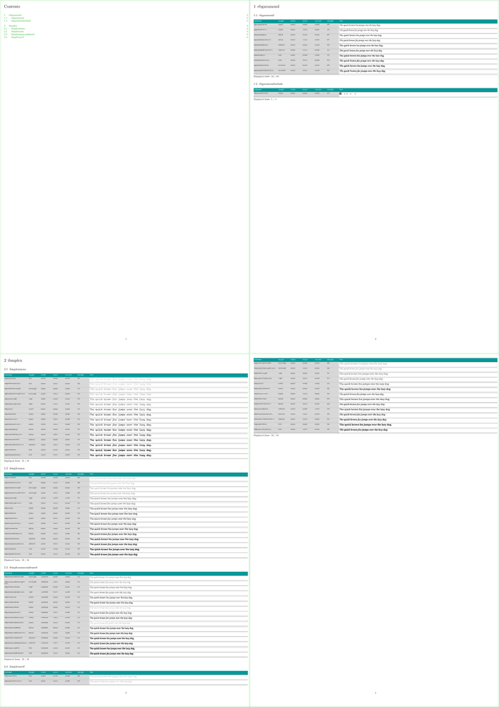

Base on lua:
-
\ctxlua{displayfontfamily("ibmplexsans")}to showibmplexsans -
\ctxlua{displayfontfamilies("ibmplex")}to show allibmplexfonts
Fonts are sorted per weight, width and then style. We also have access to variant, xheight. The script may be also usable to partially automatize the production of typescripts.
The code is neither clean nor optimised, perhaps later.
-
\setuppapersize[A3][A1] \setuppaper[nx=2,ny=2] \setuparranging[XY] \showframe[edge] \setupinteraction[state=start] \placebookmarks % HERE [chapter,section] [section] \setuplayout [topspace=5mm, backspace=5.0mm, header=0.0mm, headerdistance=0.0mm, footer=5.0mm, footerdistance=2.0mm, width=29.0cm, height=40cm, margin=0.0mm, margindistance=0.0mm,] \setupfootertexts [pagenumber] \setupTABLE[c][1,2,3,4,5,6] [foregroundstyle={\tt\tfxx}, background=color, backgroundcolor=lightgray,] \setupTABLE[r][first] [background=color, backgroundcolor=middlecyan, foregroundstyle={\tt\bfx}, foregroundcolor=white,] \setupTABLE[c][1][width=0.10\textwidth] \setupTABLE[c][2,3,4,5,6][width=0.05\textwidth] \setupTABLE[c][7][width=0.65\textwidth,align=flushleft] \setupTABLE[r][each][height=5\exheight] \setupTABLE[r][each][frame=off, bottomframe=on] \startluacode function displayfontfamily(thefontfamily) sorting_weight = {"thin", "ultralight", "ultra light", "extralight", "extra light", "light", "book", "roman", "normal", "regular", "titling", "medium", "demibold", "demi", "demi bold", "semibold", "semi bold", "heavy", "bold", "extrabold", "extra bold", "ultrabold", "ultra bold", "black"} sorting_width = {"normal", "regular", "regular", "semicondensed", "condensed", "extracondensed", "ultracondensed", "semiexpanded", "expanded", "extraexpanded", "ultraexpanded"} sorting_style = {"normal", "regular", "italic", "slanted"} fonts.names.load() summary = {} for family,_ in table.sortedpairs(fonts.names.data.families) do if family == thefontfamily then local tabfont = fonts.names.data.families[family] for i = 1, table.getn(tabfont) do fontid = fonts.definers.internal({ name = tabfont[i].fontname}) data = fonts.hashes.identifiers[fontid] fontname = tabfont[i].fontname --% weight ============================================ if data.shared then if (tabfont[i].weight == data.shared.rawdata.metadata.weight or ( (tabfont[i].weight == "normal") and (data.shared.rawdata.metadata.weight == "regular")) ) then weight = tabfont[i].weight else weight = data.shared.rawdata.metadata.weight end xheight = tostring(data.shared.rawdata.metadata.xheight) else weight = tabfont[i].weight xheight = "n/a" end if (string.match(fontname, "light")) then if ((string.match(fontname, "extralight")) or (string.match(fontname, "ultlt"))) then weight = "extralight" else weight = "light" end end if (string.match(fontname, "demi")) then weight = "demi" end if (string.match(fontname, "med") and (not (string.match(fontname, "medium")))) then weight = "medium" end --% width ============================================ if (string.match(fontname, "cond") or (string.match(fontname, "cn"))) then if string.match(fontname, "semicond") then width = "semicondensed" elseif (string.match(fontname, "extracond")) then width = "extracondensed" elseif (string.match(fontname, "ultracond")) then width = "ultracondensed" else width = "condensed" end elseif (string.match(fontname, "exp")) then if string.match(fontname, "semiexp") then width = "semiexpanded" elseif (string.match(fontname, "extraexp")) then width = "extraexpanded" elseif (string.match(fontname, "ultraexp")) then width = "ultraexpanded" else width = "expanded" end else width = "normal" end --% style ============================================ style = tabfont[i].style --% variant ============================================ variant = tabfont[i].variant --% summary ============================================ summary [i] = {} summary [i] ["fontfamily"] = family summary [i] ["fontname"] = fontname summary [i] ["weight"] = weight summary [i] ["width"] = width summary [i] ["style"] = style summary [i] ["variant"] = variant summary [i] ["xheight"] = xheight end end end context.startsection({title = thefontfamily}) context.bTABLE({split = "repeat"}) context.bTABLEhead() context.bTR() context.bTD() context("fontname") context.eTD() context.bTD() context("weight") context.eTD() context.bTD() context("width") context.eTD() context.bTD() context("style") context.eTD() context.bTD() context("variant") context.eTD() context.bTD() context("xheight") context.eTD() context.bTD() context("Test") context.eTD() context.eTR() context.eTABLEhead() context.bTABLEbody() fontcount = 0 fontdisplayed = {} for i = 1, table.getn(sorting_weight) do for j = 1, table.getn(sorting_width) do for k = 1, table.getn(sorting_style) do for m = 1, table.getn(summary) do if ((summary [m] ["weight"] == sorting_weight [i]) and (summary [m] ["width"] == sorting_width [j]) and (summary [m] ["style"] == sorting_style [k])) then fontcount = fontcount + 1 table.insert(fontdisplayed, summary [m] ["fontname"]) context.bTR() context.bTD() context(summary [m] ["fontname"]) context.eTD() context.bTD() context(summary [m] ["weight"]) context.eTD() context.bTD() context(summary [m] ["width"]) context.eTD() context.bTD() context(summary [m] ["style"]) context.eTD() context.bTD() context(summary [m] ["variant"]) context.eTD() context.bTD() context(summary [m] ["xheight"]) context.eTD() context.bTD() context.definedfont{"name:".. summary [m] ["fontname"] .. "*default" } context("The quick brown fox jumps over the lazy dog.") context.eTD() context.eTR() end end end end end context.eTABLEbody() context.eTABLE() context("Displayed fonts: " .. fontcount .. " / " .. table.getn(summary)) context.par() for p = 1, table.getn(summary) do displayed = false for q = 1, table.getn(fontdisplayed) do if summary [p] ["fontname"] == fontdisplayed[q] then displayed = true end end if (not displayed) then context(summary [p] ["fontname"] .. ": " .. summary [p] ["weight"] .. ", " .. summary [p] ["width"] .. ", " .. summary [p] ["style"] .. ", " .. summary [p] ["variant"]) context.par() end end context.stopsection() end function displayfontfamilies(thefontfamily_match) fonts.names.load() context.startchapter({title = thefontfamily_match}) for family,_ in table.sortedpairs(fonts.names.data.families) do if string.match(family, thefontfamily_match) then displayfontfamily(family) end end context.stopchapter() end \stopluacode \starttext \completecontent \page % \ctxlua{displayfontfamily("ibmplexsans")} % \ctxlua{displayfontfamilies("ondine")} % \ctxlua{displayfontfamilies("optima")} % \ctxlua{displayfontfamilies("ibmplex")} % \ctxlua{displayfontfamilies("futura")} % \ctxlua{displayfontfamilies("gillsans")} % \ctxlua{displayfontfamilies("gillius")} % \ctxlua{displayfontfamilies("source")} % \ctxlua{displayfontfamilies("fira")} % \ctxlua{displayfontfamilies("inconsolata")} \ctxlua{displayfontfamilies("ebgaramond")} \ctxlua{displayfontfamilies("ibmplex")} \stoptext
- 